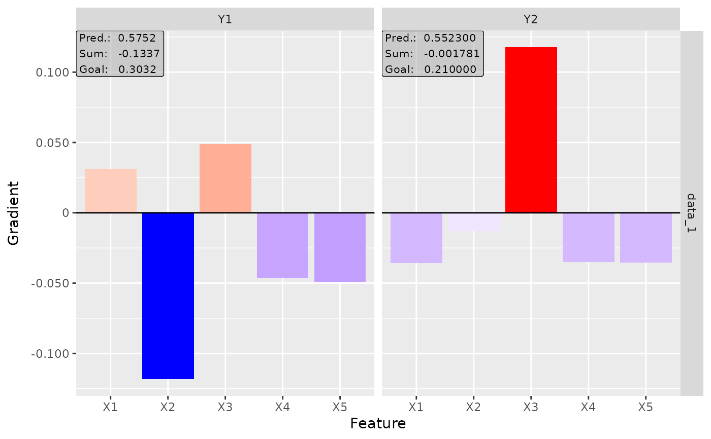
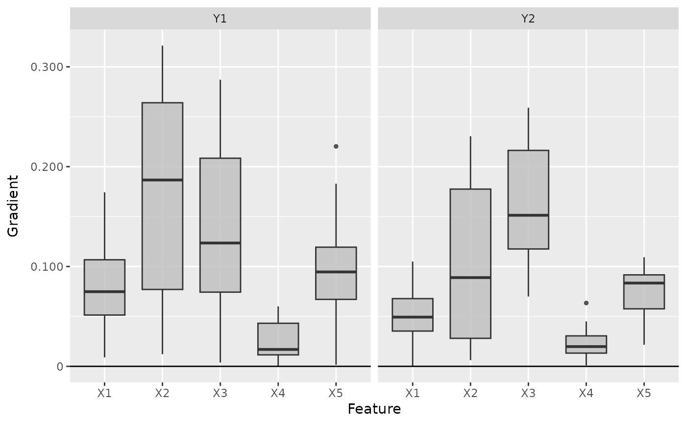
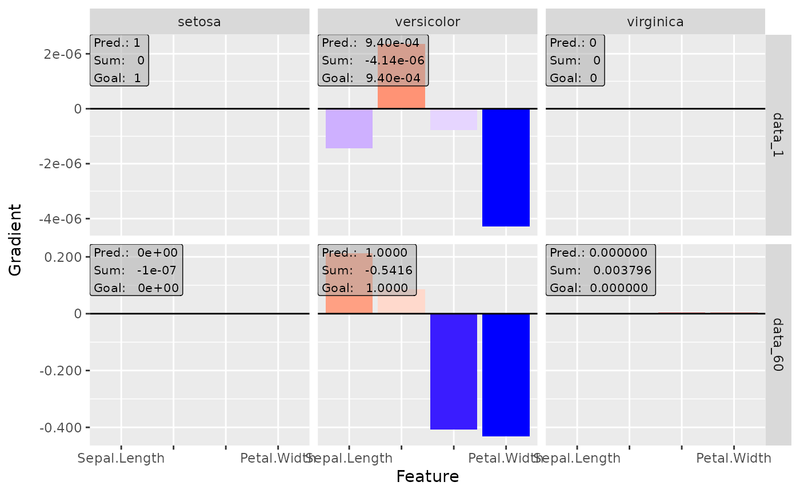
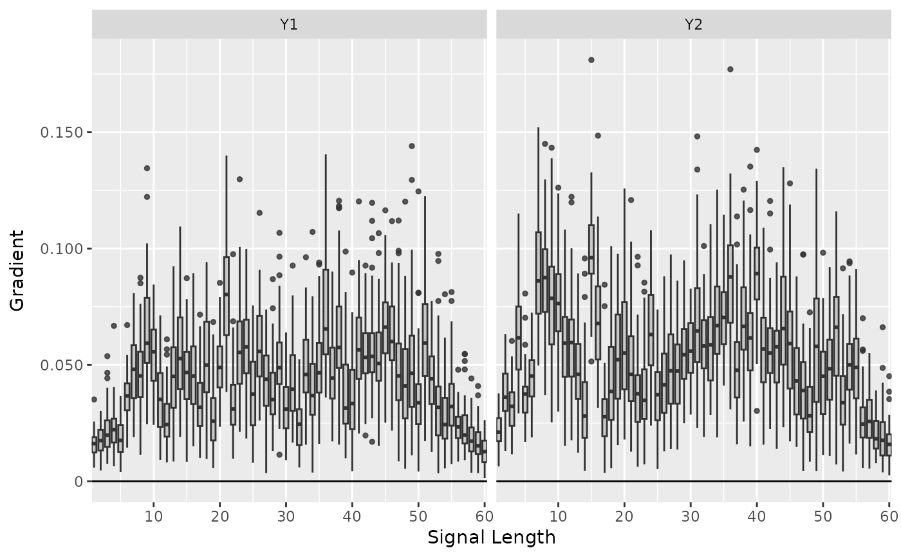

'SmoothGrad' was introduced by D. Smilkov et al. (2017) and is an extension
to the classical Vanilla Gradient method. It takes the mean of the
gradients for n perturbations of each data point, i.e. with
\(\epsilon \sim N(0,\sigma)\)
$$1/n \sum_n d f(x+ \epsilon)_j / d x_j.$$
D. Smilkov et al. (2017) SmoothGrad: removing noise by adding noise. CoRR, abs/1706.03825
innsight::InterpretingMethod -> innsight::GradientBased -> SmoothGrad
nNumber of perturbations of the input data (default: \(50\)).
noise_levelThe standard deviation of the Gaussian
perturbation, i.e. \(\sigma = (max(x) - min(x)) *\) noise_level.
new()Create a new instance of the SmoothGrad method.
SmoothGrad$new( converter, data, channels_first = TRUE, output_idx = NULL, ignore_last_act = TRUE, times_input = FALSE, n = 50, noise_level = 0.1, dtype = "float" )
converterAn instance of the R6 class Converter.
dataThe data for which the smoothed gradients are to be calculated. It has to be an array or array-like format of size (batch_size, dim_in).
channels_firstThe format of the given data, i.e. channels on
last dimension (FALSE) or after the batch dimension (TRUE). If the
data has no channels, use the default value TRUE.
output_idxThis vector determines for which outputs the method
will be applied. By default (NULL), all outputs (but limited to the
first 10) are considered.
ignore_last_actA boolean value to include the last
activation into all the calculations, or not (default: TRUE). In
some cases, the last activation leads to a saturation problem.
times_inputMultiplies the gradients with the input features.
This method is called 'SmoothGrad x Input'. Default: FALSE.
nNumber of perturbations of the input data (default: \(50\)).
noise_levelDetermines the standard deviation of the gaussian
perturbation, i.e. \(\sigma = (max(x) - min(x)) *\) noise_level.
dtypeThe data type for the calculations. Use
either 'float' for torch::torch_float or 'double' for
torch::torch_double.
clone()The objects of this class are cloneable with this method.
SmoothGrad$clone(deep = FALSE)
deepWhether to make a deep clone.
# ------------------------- Example 1: Torch ------------------------------- library(torch) # Create nn_sequential model and data model <- nn_sequential( nn_linear(5, 10), nn_relu(), nn_linear(10, 2), nn_sigmoid() ) data <- torch_randn(25, 5) # Create Converter converter <- Converter$new(model, input_dim = c(5)) # Calculate the smoothed Gradients smoothgrad <- SmoothGrad$new(converter, data) #> Backwardpass 'SmoothGrad': #> | | | 0% | |=================================== | 50% | |======================================================================| 100% # Print the result as a data.frame smoothgrad$get_result("data.frame") #> data feature class value #> 1 data_1 X1 Y1 1.328102e-01 #> 2 data_2 X1 Y1 8.494134e-02 #> 3 data_3 X1 Y1 -1.532008e-03 #> 4 data_4 X1 Y1 7.671811e-02 #> 5 data_5 X1 Y1 5.181240e-03 #> 6 data_6 X1 Y1 3.927539e-02 #> 7 data_7 X1 Y1 6.405262e-03 #> 8 data_8 X1 Y1 8.536396e-02 #> 9 data_9 X1 Y1 6.179729e-02 #> 10 data_10 X1 Y1 9.615354e-02 #> 11 data_11 X1 Y1 1.251208e-01 #> 12 data_12 X1 Y1 1.168710e-01 #> 13 data_13 X1 Y1 1.019187e-01 #> 14 data_14 X1 Y1 1.327314e-01 #> 15 data_15 X1 Y1 1.001846e-01 #> 16 data_16 X1 Y1 6.882642e-02 #> 17 data_17 X1 Y1 9.170400e-02 #> 18 data_18 X1 Y1 -1.388479e-02 #> 19 data_19 X1 Y1 2.978688e-02 #> 20 data_20 X1 Y1 1.123533e-01 #> 21 data_21 X1 Y1 8.869750e-02 #> 22 data_22 X1 Y1 1.436326e-01 #> 23 data_23 X1 Y1 1.042384e-01 #> 24 data_24 X1 Y1 1.684314e-01 #> 25 data_25 X1 Y1 1.872820e-01 #> 26 data_1 X2 Y1 5.450057e-02 #> 27 data_2 X2 Y1 1.336769e-02 #> 28 data_3 X2 Y1 1.434206e-03 #> 29 data_4 X2 Y1 8.187301e-02 #> 30 data_5 X2 Y1 -1.525803e-02 #> 31 data_6 X2 Y1 5.450525e-02 #> 32 data_7 X2 Y1 3.532495e-02 #> 33 data_8 X2 Y1 1.080224e-01 #> 34 data_9 X2 Y1 9.446955e-04 #> 35 data_10 X2 Y1 5.950186e-02 #> 36 data_11 X2 Y1 6.652206e-02 #> 37 data_12 X2 Y1 6.885371e-02 #> 38 data_13 X2 Y1 7.476616e-02 #> 39 data_14 X2 Y1 5.534915e-02 #> 40 data_15 X2 Y1 6.208622e-02 #> 41 data_16 X2 Y1 -4.188229e-02 #> 42 data_17 X2 Y1 1.092884e-01 #> 43 data_18 X2 Y1 -3.343800e-02 #> 44 data_19 X2 Y1 4.634329e-02 #> 45 data_20 X2 Y1 4.364097e-02 #> 46 data_21 X2 Y1 3.015320e-02 #> 47 data_22 X2 Y1 8.816151e-02 #> 48 data_23 X2 Y1 -2.532132e-03 #> 49 data_24 X2 Y1 7.570317e-02 #> 50 data_25 X2 Y1 9.717736e-02 #> 51 data_1 X3 Y1 5.762533e-02 #> 52 data_2 X3 Y1 -1.390046e-02 #> 53 data_3 X3 Y1 -6.984763e-03 #> 54 data_4 X3 Y1 -3.209425e-03 #> 55 data_5 X3 Y1 4.010441e-02 #> 56 data_6 X3 Y1 1.522195e-02 #> 57 data_7 X3 Y1 -1.317494e-03 #> 58 data_8 X3 Y1 -2.599648e-02 #> 59 data_9 X3 Y1 -1.369113e-02 #> 60 data_10 X3 Y1 -1.408873e-02 #> 61 data_11 X3 Y1 -1.686561e-02 #> 62 data_12 X3 Y1 6.425597e-02 #> 63 data_13 X3 Y1 7.490532e-02 #> 64 data_14 X3 Y1 -5.248719e-02 #> 65 data_15 X3 Y1 -3.258589e-02 #> 66 data_16 X3 Y1 -8.567973e-03 #> 67 data_17 X3 Y1 -4.557255e-02 #> 68 data_18 X3 Y1 -3.525820e-03 #> 69 data_19 X3 Y1 1.844889e-02 #> 70 data_20 X3 Y1 -1.932591e-05 #> 71 data_21 X3 Y1 -4.567511e-02 #> 72 data_22 X3 Y1 -8.000000e-03 #> 73 data_23 X3 Y1 -3.007523e-02 #> 74 data_24 X3 Y1 -6.116988e-03 #> 75 data_25 X3 Y1 2.162229e-02 #> 76 data_1 X4 Y1 2.096847e-01 #> 77 data_2 X4 Y1 2.660131e-01 #> 78 data_3 X4 Y1 -1.401570e-02 #> 79 data_4 X4 Y1 1.046628e-01 #> 80 data_5 X4 Y1 1.265482e-01 #> 81 data_6 X4 Y1 6.731871e-02 #> 82 data_7 X4 Y1 2.249858e-01 #> 83 data_8 X4 Y1 1.016254e-01 #> 84 data_9 X4 Y1 2.423027e-01 #> 85 data_10 X4 Y1 8.318435e-02 #> 86 data_11 X4 Y1 1.159242e-01 #> 87 data_12 X4 Y1 1.949806e-01 #> 88 data_13 X4 Y1 2.248473e-01 #> 89 data_14 X4 Y1 1.305966e-01 #> 90 data_15 X4 Y1 1.187214e-01 #> 91 data_16 X4 Y1 4.343479e-02 #> 92 data_17 X4 Y1 6.812692e-02 #> 93 data_18 X4 Y1 1.631247e-01 #> 94 data_19 X4 Y1 1.738129e-02 #> 95 data_20 X4 Y1 8.339798e-02 #> 96 data_21 X4 Y1 9.019726e-02 #> 97 data_22 X4 Y1 1.480669e-01 #> 98 data_23 X4 Y1 3.566306e-02 #> 99 data_24 X4 Y1 1.601820e-01 #> 100 data_25 X4 Y1 1.628362e-01 #> 101 data_1 X5 Y1 -6.816657e-04 #> 102 data_2 X5 Y1 -5.312876e-02 #> 103 data_3 X5 Y1 1.029400e-01 #> 104 data_4 X5 Y1 6.623258e-02 #> 105 data_5 X5 Y1 -8.063699e-02 #> 106 data_6 X5 Y1 3.628471e-02 #> 107 data_7 X5 Y1 -9.567384e-02 #> 108 data_8 X5 Y1 7.410642e-02 #> 109 data_9 X5 Y1 -6.733458e-02 #> 110 data_10 X5 Y1 1.120047e-01 #> 111 data_11 X5 Y1 9.389587e-02 #> 112 data_12 X5 Y1 -4.559038e-02 #> 113 data_13 X5 Y1 -4.981298e-02 #> 114 data_14 X5 Y1 1.182074e-01 #> 115 data_15 X5 Y1 1.230837e-01 #> 116 data_16 X5 Y1 8.452469e-02 #> 117 data_17 X5 Y1 5.682133e-02 #> 118 data_18 X5 Y1 -9.136078e-02 #> 119 data_19 X5 Y1 4.599331e-02 #> 120 data_20 X5 Y1 2.384293e-02 #> 121 data_21 X5 Y1 1.361039e-01 #> 122 data_22 X5 Y1 1.164843e-01 #> 123 data_23 X5 Y1 9.104019e-02 #> 124 data_24 X5 Y1 2.696096e-02 #> 125 data_25 X5 Y1 1.617956e-02 #> 126 data_1 X1 Y2 -1.016155e-01 #> 127 data_2 X1 Y2 -4.021399e-02 #> 128 data_3 X1 Y2 -1.183797e-01 #> 129 data_4 X1 Y2 -1.492007e-01 #> 130 data_5 X1 Y2 -5.308837e-02 #> 131 data_6 X1 Y2 -1.329978e-01 #> 132 data_7 X1 Y2 -1.307815e-01 #> 133 data_8 X1 Y2 -1.564858e-01 #> 134 data_9 X1 Y2 -3.038235e-02 #> 135 data_10 X1 Y2 -1.115884e-01 #> 136 data_11 X1 Y2 -9.690390e-02 #> 137 data_12 X1 Y2 -1.184820e-01 #> 138 data_13 X1 Y2 -1.472964e-01 #> 139 data_14 X1 Y2 -7.102242e-02 #> 140 data_15 X1 Y2 -9.990229e-02 #> 141 data_16 X1 Y2 -5.347174e-02 #> 142 data_17 X1 Y2 -1.360182e-01 #> 143 data_18 X1 Y2 -4.373963e-02 #> 144 data_19 X1 Y2 -1.370286e-01 #> 145 data_20 X1 Y2 -9.189022e-02 #> 146 data_21 X1 Y2 -6.705230e-02 #> 147 data_22 X1 Y2 -1.452130e-01 #> 148 data_23 X1 Y2 -5.692679e-02 #> 149 data_24 X1 Y2 -7.777128e-02 #> 150 data_25 X1 Y2 -1.496322e-01 #> 151 data_1 X2 Y2 -8.891920e-02 #> 152 data_2 X2 Y2 -8.393949e-02 #> 153 data_3 X2 Y2 -2.710124e-02 #> 154 data_4 X2 Y2 -1.059926e-01 #> 155 data_5 X2 Y2 -2.775940e-02 #> 156 data_6 X2 Y2 -7.770833e-02 #> 157 data_7 X2 Y2 -1.206256e-01 #> 158 data_8 X2 Y2 -1.348343e-01 #> 159 data_9 X2 Y2 -6.914008e-02 #> 160 data_10 X2 Y2 -8.154205e-02 #> 161 data_11 X2 Y2 -7.710443e-02 #> 162 data_12 X2 Y2 -1.174146e-01 #> 163 data_13 X2 Y2 -1.620124e-01 #> 164 data_14 X2 Y2 -5.552894e-02 #> 165 data_15 X2 Y2 -7.731004e-02 #> 166 data_16 X2 Y2 -1.644119e-02 #> 167 data_17 X2 Y2 -1.129813e-01 #> 168 data_18 X2 Y2 -3.409590e-02 #> 169 data_19 X2 Y2 -6.983092e-02 #> 170 data_20 X2 Y2 -5.340233e-02 #> 171 data_21 X2 Y2 -3.673698e-02 #> 172 data_22 X2 Y2 -1.263348e-01 #> 173 data_23 X2 Y2 -2.630725e-02 #> 174 data_24 X2 Y2 -1.040146e-01 #> 175 data_25 X2 Y2 -1.361714e-01 #> 176 data_1 X3 Y2 4.949958e-02 #> 177 data_2 X3 Y2 1.077569e-01 #> 178 data_3 X3 Y2 -3.256876e-02 #> 179 data_4 X3 Y2 1.309220e-02 #> 180 data_5 X3 Y2 5.358237e-02 #> 181 data_6 X3 Y2 6.901754e-03 #> 182 data_7 X3 Y2 9.535847e-02 #> 183 data_8 X3 Y2 1.645097e-02 #> 184 data_9 X3 Y2 1.019798e-01 #> 185 data_10 X3 Y2 -8.349061e-03 #> 186 data_11 X3 Y2 1.614238e-02 #> 187 data_12 X3 Y2 5.983724e-02 #> 188 data_13 X3 Y2 6.887297e-02 #> 189 data_14 X3 Y2 2.510173e-02 #> 190 data_15 X3 Y2 7.808196e-03 #> 191 data_16 X3 Y2 2.601551e-02 #> 192 data_17 X3 Y2 1.745628e-02 #> 193 data_18 X3 Y2 8.165595e-02 #> 194 data_19 X3 Y2 -2.452223e-02 #> 195 data_20 X3 Y2 2.673615e-02 #> 196 data_21 X3 Y2 1.070031e-02 #> 197 data_22 X3 Y2 1.090138e-02 #> 198 data_23 X3 Y2 2.091782e-02 #> 199 data_24 X3 Y2 5.736971e-02 #> 200 data_25 X3 Y2 2.792471e-02 #> 201 data_1 X4 Y2 7.405694e-02 #> 202 data_2 X4 Y2 4.207156e-03 #> 203 data_3 X4 Y2 8.132581e-02 #> 204 data_4 X4 Y2 2.960562e-02 #> 205 data_5 X4 Y2 6.174043e-02 #> 206 data_6 X4 Y2 5.406854e-02 #> 207 data_7 X4 Y2 -3.163880e-03 #> 208 data_8 X4 Y2 -5.183284e-03 #> 209 data_9 X4 Y2 2.247865e-02 #> 210 data_10 X4 Y2 8.513580e-02 #> 211 data_11 X4 Y2 7.080305e-02 #> 212 data_12 X4 Y2 3.214620e-02 #> 213 data_13 X4 Y2 3.163376e-02 #> 214 data_14 X4 Y2 7.402359e-03 #> 215 data_15 X4 Y2 5.721664e-02 #> 216 data_16 X4 Y2 1.436388e-01 #> 217 data_17 X4 Y2 -1.872879e-02 #> 218 data_18 X4 Y2 2.596447e-02 #> 219 data_19 X4 Y2 7.281896e-02 #> 220 data_20 X4 Y2 7.464688e-02 #> 221 data_21 X4 Y2 5.802657e-02 #> 222 data_22 X4 Y2 3.999303e-02 #> 223 data_23 X4 Y2 1.130232e-01 #> 224 data_24 X4 Y2 1.536132e-02 #> 225 data_25 X4 Y2 6.372496e-02 #> 226 data_1 X5 Y2 -2.475729e-02 #> 227 data_2 X5 Y2 1.462196e-02 #> 228 data_3 X5 Y2 -2.067755e-03 #> 229 data_4 X5 Y2 1.100450e-02 #> 230 data_5 X5 Y2 -2.077672e-02 #> 231 data_6 X5 Y2 2.667539e-03 #> 232 data_7 X5 Y2 1.798838e-02 #> 233 data_8 X5 Y2 3.707678e-02 #> 234 data_9 X5 Y2 1.721670e-02 #> 235 data_10 X5 Y2 3.426339e-02 #> 236 data_11 X5 Y2 3.023921e-03 #> 237 data_12 X5 Y2 -8.846463e-03 #> 238 data_13 X5 Y2 2.632407e-02 #> 239 data_14 X5 Y2 -3.702571e-03 #> 240 data_15 X5 Y2 2.219076e-02 #> 241 data_16 X5 Y2 -3.892373e-02 #> 242 data_17 X5 Y2 2.023605e-02 #> 243 data_18 X5 Y2 -6.624395e-03 #> 244 data_19 X5 Y2 2.676868e-02 #> 245 data_20 X5 Y2 -3.718242e-02 #> 246 data_21 X5 Y2 -7.667582e-03 #> 247 data_22 X5 Y2 3.340803e-02 #> 248 data_23 X5 Y2 -3.673771e-02 #> 249 data_24 X5 Y2 8.520585e-03 #> 250 data_25 X5 Y2 1.039692e-02 # Plot the result for both classes plot(smoothgrad, output_idx = 1:2)  # Plot the boxplot of all datapoints boxplot(smoothgrad, output_idx = 1:2)  # ------------------------- Example 2: Neuralnet --------------------------- library(neuralnet) data(iris) # Train a neural network nn <- neuralnet(Species ~ ., iris, linear.output = FALSE, hidden = c(10, 5), act.fct = "logistic", rep = 1 ) # Convert the trained model converter <- Converter$new(nn) # Calculate the smoothed gradients smoothgrad <- SmoothGrad$new(converter, iris[, -5], times_input = FALSE) #> Backwardpass 'SmoothGrad': #> | | | 0% | |======================= | 33% | |=============================================== | 67% | |======================================================================| 100% # Plot the result for the first and 60th data point and all classes plot(smoothgrad, data_idx = c(1, 60), output_idx = 1:3)  # Calculate SmoothGrad x Input and do not ignore the last activation smoothgrad <- SmoothGrad$new(converter, iris[, -5], ignore_last_act = FALSE) #> Backwardpass 'SmoothGrad': #> | | | 0% | |======================= | 33% | |=============================================== | 67% | |======================================================================| 100% # Plot the result again plot(smoothgrad, data_idx = c(1, 60), output_idx = 1:3)  # ------------------------- Example 3: Keras ------------------------------- library(keras) if (is_keras_available()) { data <- array(rnorm(64 * 60 * 3), dim = c(64, 60, 3)) model <- keras_model_sequential() model %>% layer_conv_1d( input_shape = c(60, 3), kernel_size = 8, filters = 8, activation = "softplus", padding = "valid" ) %>% layer_conv_1d( kernel_size = 8, filters = 4, activation = "tanh", padding = "same" ) %>% layer_conv_1d( kernel_size = 4, filters = 2, activation = "relu", padding = "valid" ) %>% layer_flatten() %>% layer_dense(units = 64, activation = "relu") %>% layer_dense(units = 16, activation = "relu") %>% layer_dense(units = 3, activation = "softmax") # Convert the model converter <- Converter$new(model) # Apply the SmoothGrad method smoothgrad <- SmoothGrad$new(converter, data, channels_first = FALSE) # Plot the result for the first datapoint and all classes plot(smoothgrad, output_idx = 1:3) # Plot the result as boxplots for first two classes boxplot(smoothgrad, output_idx = 1:2) # You can also create an interactive plot with plotly. # This is a suggested package, so make sure that it is installed library(plotly) # Result as boxplots boxplot(smoothgrad, as_plotly = TRUE) # Result of the second data point plot(smoothgrad, data_idx = 2, as_plotly = TRUE) } #> Backwardpass 'SmoothGrad': #> | | | 0% | |======================= | 33% | |=============================================== | 67% | |======================================================================| 100% # ------------------------- Advanced: Plotly ------------------------------- # If you want to create an interactive plot of your results with custom # changes, you can take use of the method plotly::ggplotly library(ggplot2) library(plotly) library(neuralnet) data(iris) nn <- neuralnet(Species ~ ., iris, linear.output = FALSE, hidden = c(10, 8), act.fct = "tanh", rep = 1, threshold = 0.5 ) # create an converter for this model converter <- Converter$new(nn) # create new instance of 'SmoothGrad' smoothgrad <- SmoothGrad$new(converter, iris[, -5]) #> Backwardpass 'SmoothGrad': #> | | | 0% | |======================= | 33% | |=============================================== | 67% | |======================================================================| 100% library(plotly) # Get the ggplot and add your changes p <- plot(smoothgrad, output_idx = 1, data_idx = 1:2) + theme_bw() + scale_fill_gradient2(low = "green", mid = "black", high = "blue") #> Scale for 'fill' is already present. Adding another scale for 'fill', which #> will replace the existing scale. # Now apply the method plotly::ggplotly with argument tooltip = "text" plotly::ggplotly(p, tooltip = "text")